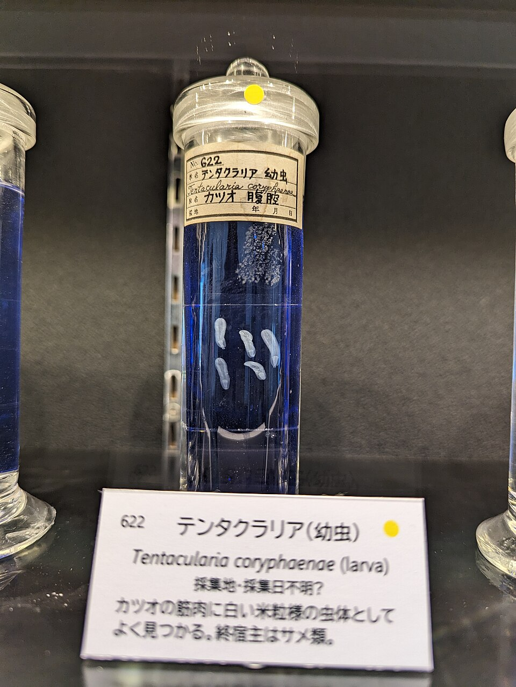

Meguro: фестиваль сайры и что вокруг




Фестиваль сайры: в чём смысл
Всё началось с рассказа ракуго (японский разговорный жанр, один рассказчик на подушке) «Meguro no Sanma» - «Сайра из Meguro». Сюжет:
- Князь выезжает на охоту в Meguro, слуги забыли еду. Он чувствует запах жареной рыбы: крестьяне жарят на углях сайру, дешёвую рыбу простолюдинов.
- Голодный князь ест её, чёрную от углей и в жиру, и это лучшее, что он пробовал.
- Дома он требует сайру. Повара покупают её на рыбном рынке Nihonbashi, отпаривают, чтобы ушёл жир, вынимают все кости и подают кашицей в супе. Невкусно.
- «Где вы её купили?» - «На рынке Nihonbashi». Князь: «Нет, сайра хороша только из Meguro!» Смешно потому, что Meguro далеко от моря, рыбу там не ловят.
Район Meguro сделал из этого праздник: каждый год жарят на углях свежую сайру из рыбацкого города Kesennuma (префектура Miyagi). Сегодня 50-й районный праздник.
Стоит ли идти? Без сайры это районная ярмарка: сцена (около 30 коллективов, духовые оркестры, танцы), ярмарка продуктов из Kanazawa, Kesennuma и Kakuda, в 12:30 мастер Yanagiya Kosan VI рассказывает «Meguro no Sanma» (по-японски). Парк по пути к реке, поэтому зайти на 15-20 минут посмотреть атмосферу и дым от углей - да, специально ехать - нет.
11.10, 10:00-15:30, парк Tado Hiroba (Meguro 1-25-8). От станции Meguro ~10 мин: вниз по склону Gonnosuke-zaka, у моста Meguro Shinbashi направо. Сегодня в день праздника бесплатный вход в Meguro Museum of Art.
Что ещё рядом (лучше фестиваля)
🏛 Teien Art Museum - особняк ар-деко 1933 года
Бывшая резиденция принца Asaka. Интерьеры заказывали во Франции: декоратор Henri Rapin, стекло René Lalique. После войны здесь была резиденция премьера Yoshida Shigeru, с 1983 года музей, с 2015 года национальное важное культурное наследие. Сейчас выставка Marimekko (до 20.12), открыто 10:00-18:00, платно. Сам дом и японский сад с прудом - главное. ~7 мин от станции, в другую сторону от реки (восточный выход). На всё ~1 час.
🪱 Meguro Parasitological Museum - музей паразитов
Частный научный музей паразитов, таких в мире единицы, основан в 1953 году врачом Satoru Kamegai. Около 300 образцов в формалине, звезда - лентец длиной 8,8 метра, рядом висит верёвка той же длины, чтобы прочувствовать. Бесплатно, 10:00-17:00, по воскресеньям открыт. Маленький, на 20-30 минут. По пути: ~12 мин от станции, за рекой по улице Meguro-dori.
🌊 Набережная реки Meguro
Река длиной 7,8 км, берега озеленены и превращены в прогулочную зону. Отсюда вверх по течению ~25-30 мин пешком до Nakameguro.
Как распределить время (приезд 13:25)
- Основной вариант: 13:25 станция → 13:35-13:55 фестиваль → 13:55-14:25 набережная → Nakameguro, перекус → 15:05 Daikanyama → 15:40 в Shibuya.
- Вместо фестиваля Teien: 13:30-14:20 особняк Teien → 14:20-14:35 через станцию вниз к реке → 14:35-15:05 набережная до Nakameguro, перекус на ходу → 15:15 Daikanyama коротко → 15:40 в Shibuya. Плотно, но успеваешь.
- Музей паразитов (20-30 мин) в этот день не помещается без потери Daikanyama.